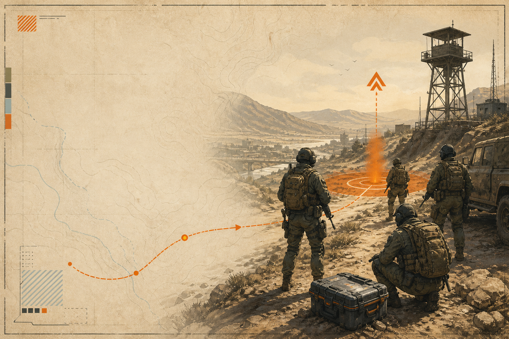

PLAYBOOK / SEARCH INTENT MAP
Find the answer
before the firefight.
Start with the problem you are trying to solve. Each guide has a narrow job, a clear scope, and an evidence trail.

OPERATIONS / BEGINNERDelta Force Extraction StarterWhat to decide before you deploy, what to carry, and how to think about the exit.↗ WARFARE / ORIENTATIONModes & Operator RolesA plain-language map of extraction play and large-scale warfare, with role prompts.↗
WARFARE / ORIENTATIONModes & Operator RolesA plain-language map of extraction play and large-scale warfare, with role prompts.↗
 SETUP / VERIFIEDPC Requirements & SetupOfficial minimum and recommended requirements, plus a clean pre-launch checklist.↗
SETUP / VERIFIEDPC Requirements & SetupOfficial minimum and recommended requirements, plus a clean pre-launch checklist.↗
WHY THIS STRUCTURE
One question,
one useful page.
The first content set follows the keyword and page matrix behind this site: broad terms land on navigation pages; specific questions land on focused guides. That keeps the site understandable for players and easier to expand responsibly.